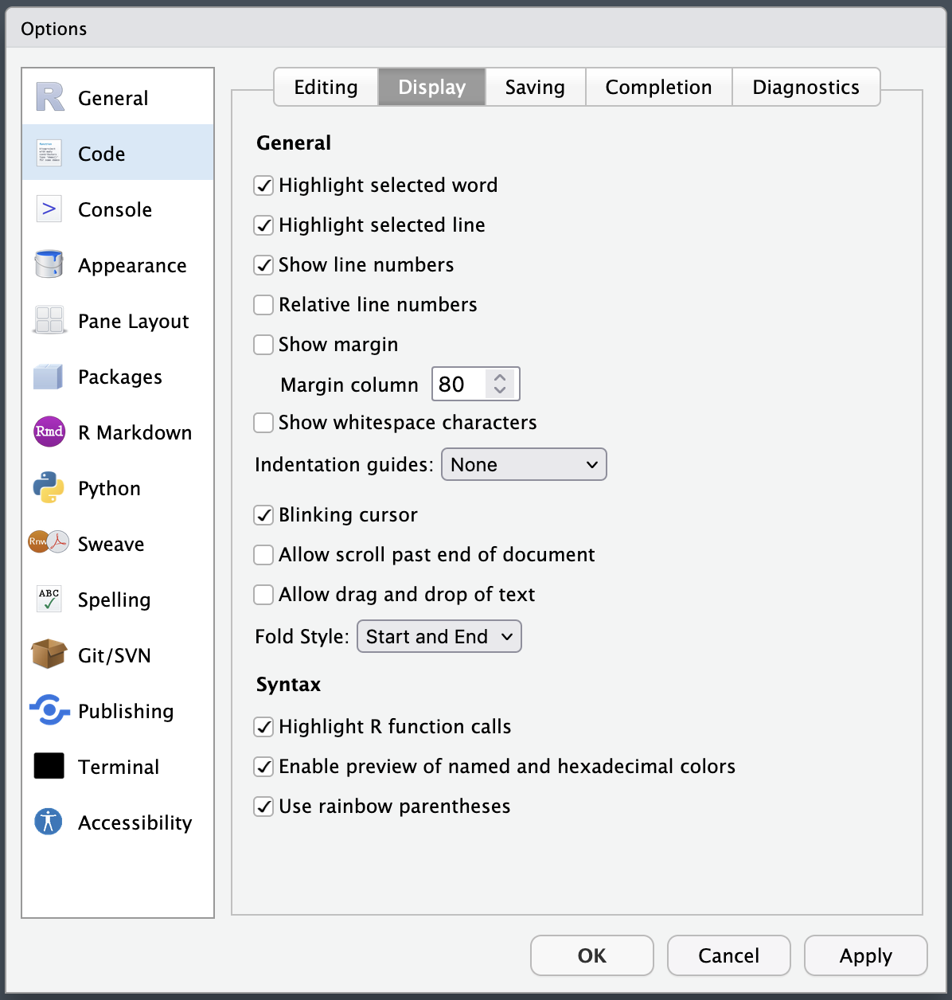
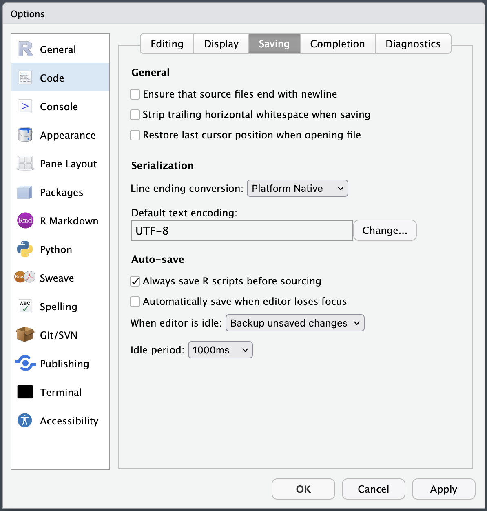
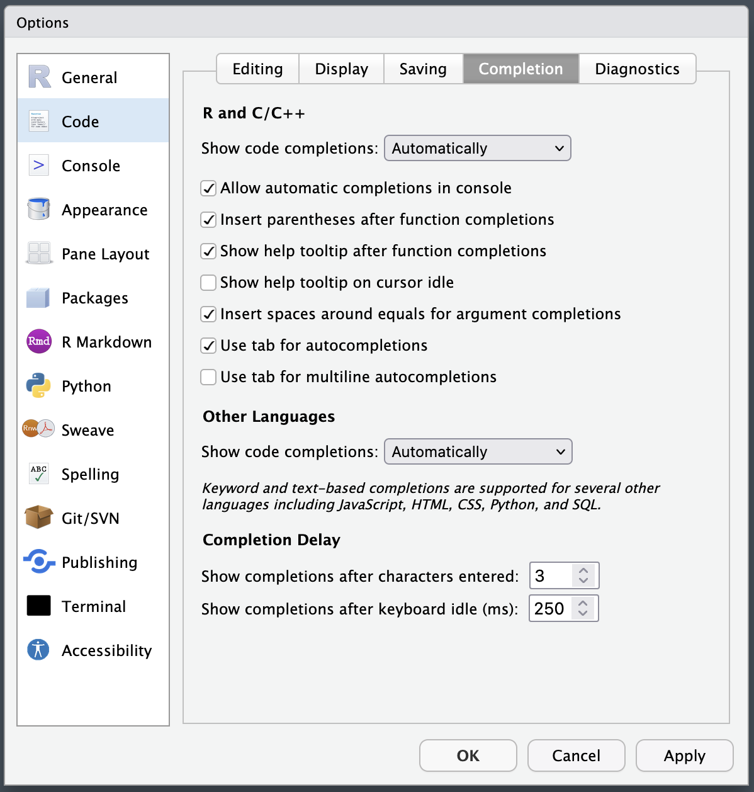
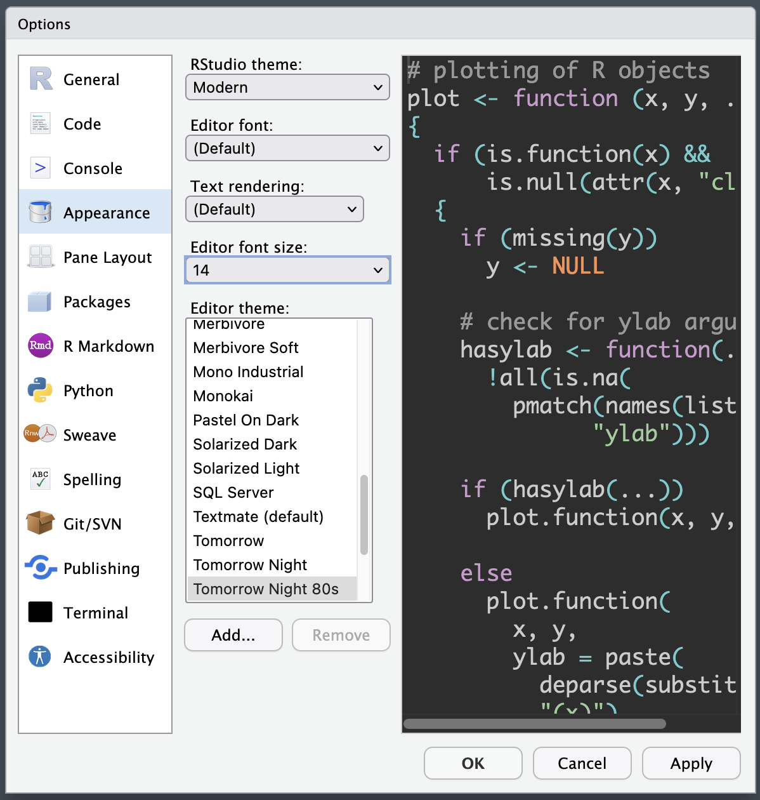
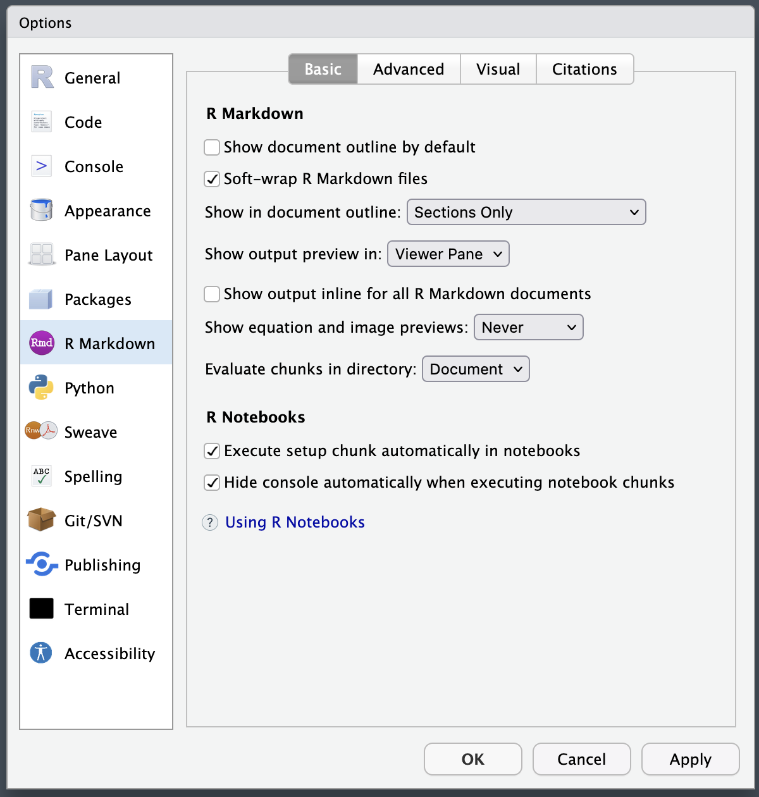
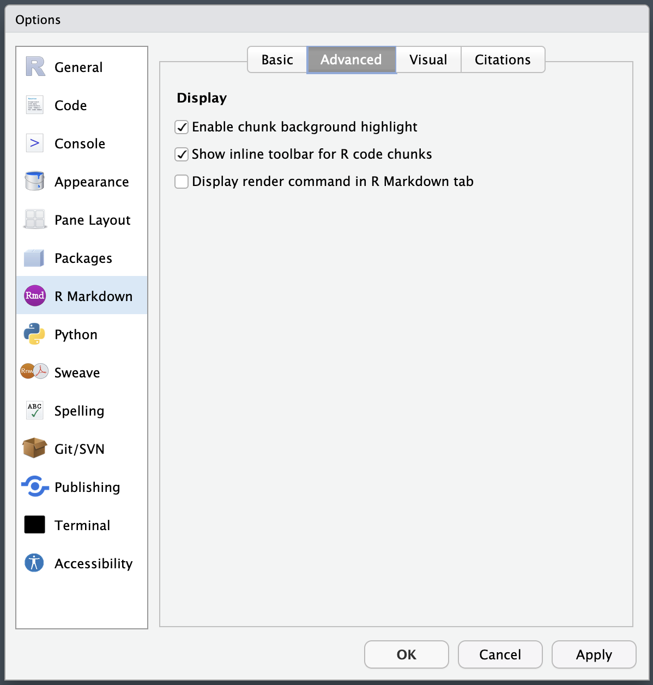

RStudioの設定
RStudioはそのままでも使えるが、少しカスタマイズするとより使い勝手が良くなる。RStudioのカスタマイズ画面はTools > Global Optionsをクリックすることで表示される。

以下の設定はJDCat分析ツールで使用可能なRStudio最新版 (RStudio Server 2022.12.0+353)の設定であり、宋の設定と同じである。
1 General
1.1 Basicタブ
| 項目 | 設定 |
|---|---|
| Default working directory (when not in a project) | ~ |
| Restore most recently opened project at startup | |
| Restore previously open source documents at startup | |
| Run Rprofile when resuming suspended session | |
| Restore .RData into workspace at startup | |
| Save work space to .Rdata on exit | Never |
| Always save history (even when not saving .RData) | |
| Remove duplicate entries in history | |
| Wrap around when navigating to previous/next tab | チェック |
1.2 Graphicsタブ
| 項目 | 設定 |
|---|---|
| Backend | AGG |
| Antialising | (defualt) |
2 Code
2.1 Editingタブ
| 項目 | 設定 |
|---|---|
| Insert spaces for tab | チェック |
| Tab width | 2 or 4 |
| Auto-detect code indentation | チェック |
| Insert matching parens/quotes | チェック |
| Use native pipe operator | チェック |
| Auto-indent code after paste | チェック |
| Vertically align arguments in auto-indent | チェック |
| Soft-wrap R source files | チェック |
| Continue comment when inserting new line | |
| Enable hyperlink highlighting in editor | チェック |
| Editor scroll speed sensitivity | 100 |
| Surround selection on text insertion | Quotes & Brackets |
| Keybindings | Default |
| Focus console after excuting from source | |
| Ctrl + Enter excutes | Multi-line R statement |
| Enable code snippets | チェック |
2.2 Displayタブ

| 項目 | 設定 |
|---|---|
| Highlight selected word | チェック |
| Highlight selected line | チェック |
| Show line numbers | チェック |
| Relative line numbers | |
| Show margin | |
| Margin column | |
| Show whitespace characters | |
| Indentation guides | |
| Blinking cursor | チェック |
| Allow scroll past end of document | |
| Allow drag and drop of text | |
| Fold Style | Start and End |
| Highlight R function calls | チェック |
| Enable preview of names and hexadecimal colors | チェック |
| Rainbow parentheses | チェック |
2.3 Savingタブ

| 項目 | 設定 |
|---|---|
| Ensure that source files end with newline | |
| Strip trailing horizontal whitespace when saving | |
| Restore last cursor position when opening file | |
| Line ending conversion | Platform Native |
| Default text encoding | UTF-8 |
| Always save R script before sourcing | チェック |
| Automatically save when editor loses focus | |
| When editor is idle | Backup unsaved changes |
| Idle period | 1000ms |
2.4 Completionタブ

| 項目 | 設定 |
|---|---|
| Show code completions | Automatically |
| Allow automatic completions in console | チェック |
| Insert parentheses after function completions | チェック |
| Show help tooltip after function completions | チェック |
| Show help tooltip on cursor idle | |
| Insert spaces around equals for argument completions | チェック |
| Use tab for autocompletions | チェック |
| Use tab for multiline autocompletions | |
| Show code completions | Automatically |
| Show completions after characters entered | 3 |
| Show completions after keyboard idle (ms) | 250 |
3 Console

| 項目 | 設定 |
|---|---|
| Show syntax highlighting in console input | チェック |
| Different color for error or message output | チェック |
| Limit visible console output | |
| Limit output line length to | 1000 |
| ANSI Escape Codes | Show ANSI colors |
| Discard pending console input on error | チェック |
| Automatically expand tracebacks in error inspector | |
| Double-click to select words | |
| Warn when automatic session suspension is paused | |
| Number of seconds to delay warning | 5 |
4 Appearance

- 自分の好みのものを選択する。ただし、小さすぎる文字サイズ (font size) は推奨しない。目に優しくないだけでなく、誤字脱字が見つけにくくなる。30代から老眼で苦しみたくないなら、なるべくフォントサイズは大きめにしよう。
5 Pane Layout
| 項目 | 設定 |
|---|---|
| 左上 | Source |
| 右上 | Console |
| 左下 | すべてチェックを外す |
| 右下 | すべてチェックする |
6 R Markdown
6.1 Basic

| 項目 | 設定 |
|---|---|
| Show document outline by default | |
| Soft-wrap R markdown files | チェック |
| Show in document outline | Sections Only |
| Show output preview in | Viewer Pane |
| Show output inline for all R Markdown document | |
| Show equation and image previews | Never |
| Evaluate chunks in directory | Document |
| Excute setup chunk automatically in notebooks | チェック |
| Hide console automatically when executing notebook chunks | チェック |
6.2 Advanced

| 項目 | 設定 |
|---|---|
| Enable chunk background highlight | チェック |
| Show inline toolbar for R code chunks | チェック |
| Display render command in R Markdown tab |
設定が終わったら右下のOK、またはApplyをクリックする。